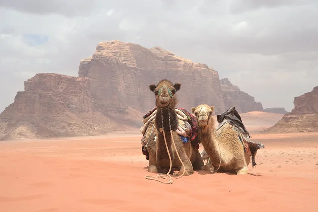

Discover a country shaped by Nabataean ingenuity, Roman engineering, Islamic heritage, and Bedouin hospitality.
From Petra and Jerash to Wadi Rum and the Dead Sea, every journey reveals a different side of the kingdom.
Travel with curiosity, take time for tea and conversation, and experience the generosity that makes Jordan feel personal.
Spring and autumn bring comfortable temperatures, clear light, and excellent conditions for walking, sightseeing, and desert stays.
Try mansaf, maqluba, mezze, fresh falafel, local olive oil, and kanafeh for a sweet finish.
Dress modestly at religious and rural sites, greet people politely, and accept tea or coffee as a sign of hospitality when offered.
The Jordanian dinar (JOD) is the local currency. Cards are common in cities, while cash is useful for taxis, markets, and rural areas.
Start planning a route that connects ancient cities, desert scenery, local food, and warm Jordanian hospitality.
Book Now